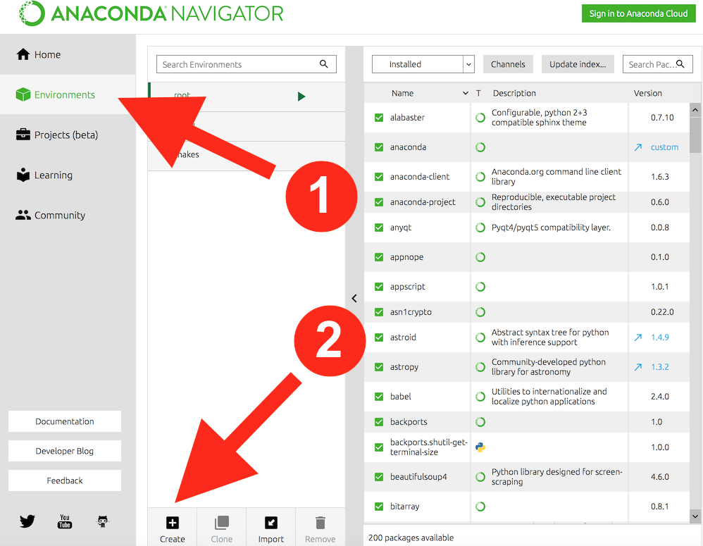
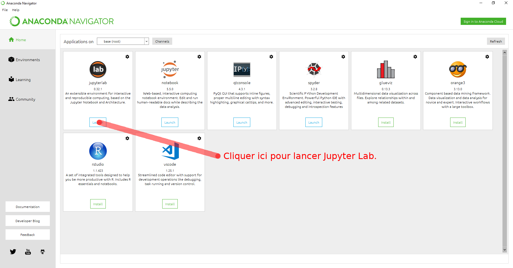
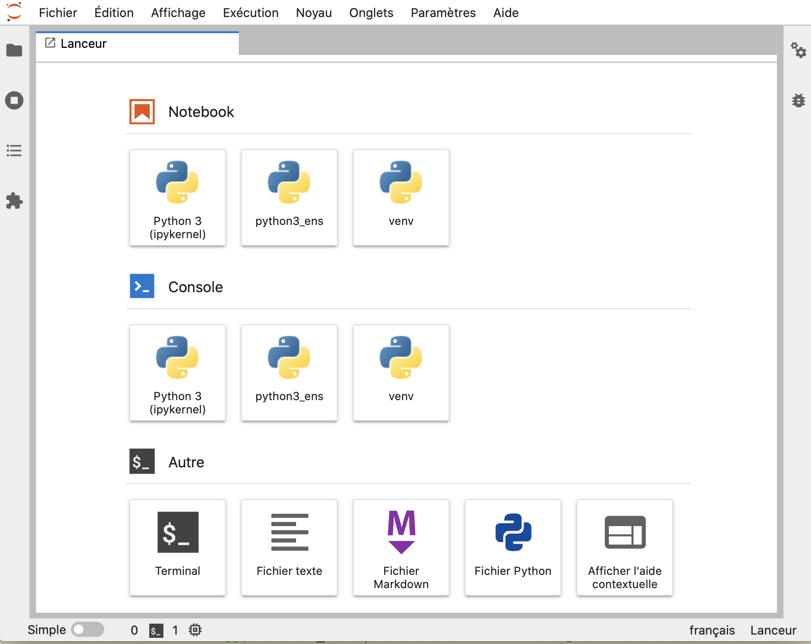

Préparer son ordinateur et travailler avec Python et JupyterLab
Contents
1. Préparer son ordinateur et travailler avec Python et JupyterLab#
Ce document détaille les étapes pour disposer sur votre machine personnelle de l’environnement Python utile en programmation scientifique et dans le Master, puis comment profiter de l’environnement de développement JupyterLab.
1.1. Préparer son ordinateur#
1.1.1. Pourquoi installer un environnement sur sa machine …#
… et ne pas simplement utiliser Google Colab ?
Il est commode d’utiliser ponctuellement cette ressource. Alors pourquoi “perdre du temps” à installer un environnement Python qui fonctionne sur sa machine ? La question est légitime. Je partage entièrement les arguments pros/cons développés dans ce bootcamp d’apprentissage de la programmation scientifique en Python.
1.1.2. Pré-requis selon votre OS#
Mac OS#
installer XCode
Windows#
installer
FirefoxouChromecarJupyter Labne fonctionne pas avecInternet Explorer.Rmq.
Jupyter Labfonctionne avec le browser récentMicrosoft Edge
A partir de maintenant, aucune hypothèse est faite sur l’OS utilisé. Ce document a été préparé dans un environnement Mac OS Catalina (10.15.7). Selon votre système, quelques différences peuvent exister.
1.1.3. Les étapes pour la première installation#
Sauter cette section une fois l’installation effectuée
On va installer une distribution python : anaconda ou miniconda si votre espace disque est réduit. Puis on va créer un environnement virtuel qui permet de séparer l’espace de votre travail Python de celui de la distribution ou de versions de Python déjà présentes sur votre machine. Ainsi vous serez propriétaire et gestionnaire de cet environnement (monPython) dans lequel vous installerez les modules dont vous avez besoin pour votre projet. Il est classique de créer un environnement de travail spécifique à chaque projet que l’on développe.
installer la distribution python 3.9 d’anaconda
Il suffit de télécharger le fichier proposé (ça peut être un peu long) et l’installer simplement en cliquant
Si anaconda est déjà présent sur votre machine, s’assurer qu’il s’agit bien de la distribution python 3.9. Dans le cas contraire, désinstallez cette version d’anaconda
L’installation prend du temps et nécessite une connection internet. Elle peut régulièrement vous demander d’installer une nouvelle version d’un des nombreux composants de la distribution.
créer un environnement virtuel (par exemple
monPython)conda create -n monPython python=3.9
ou en utilisant l’interface graphique du navigateur anaconda : 
installer les modules utiles dans
(monPython)un à un avec la commande
conda install ...ou en utilisant l’interface graphique du navigateur anaconda.
Ca y est : vous pouvez enfin commencer à travailler dans un cadre que vous maîtrisez entièrement.
Note concernant anaconda sur Windows#
L’installation d’anaconda sous windows s’effectue en mode root.
Si vous n’êtes pas (root) sur votre machine, le lancement de certaines applications peut vous être refusé.
En revanche, vous êtes propriétaire de tout environnement que vous créez.
1.1.4. Liste des modules utiles#
numpymatplotlibjupyterlabjupyterlab-spellcheckerjupyterlab-language-pack-fr-frjupyterlab-mathjax3
1.1.5. Autres références pour l’installation#
Un autre en anglais et très complet.
Le web est bien sûr plein de tutos et autres sites explicatifs …
1.2. Utiliser votre environnement#
Commencer chaque session de travail en activant votre environnement virtuel :
conda activate monPython
Votre prompt shell doit maintenant commencer par le nom de l’environnement entre parenthèses, ici ‘(monPython)’ :
(monPython) bash-3.2$
Lancer Jupyter Lab :
en ligne de commande (dans un terminal), avec la commande
jupyter laboujupyter-lab
(monPython) bash-3.2$ jupyter lab
via l’interface graphique du navigateur anaconda : 
Jupyter Lab s’ouvre dans votre browser web. Son interface est similaire à celle-ci.

Un nouveau notebook peut être créé et lancé par l’icône de la section
Notebook(celui qui indiqueipykernel) ou bien sûr via le menu Fichier/Nouveau.L’accès et le lancement de notebooks existants s’obtient après avoir cliqué sur l’icône Dossier de la barre latérale (menu vertical à gauche) qui vous permet de vous déplacer dans votre arborescence de travail.
L’interface de
Jupyter Labpermet de créer des fichiers d’un format différent de celui des notebooks (.ipynb) : markdown (.md), pyhtin (.py) ou texte (.txt) plus simplement, de lancer une session terminal (dans votre environnement (monPython))
Pour terminer proprement votre session
Une exécution d’un noyau python différent est associé à chaque notebook ouvert.
Il est conseillé d’arrêter tout ces noyaux en cours d’exécution via l’icône de la barre latérale :
Remarquez que les onglets des notebooks restent ouverts.
Si besoin, vous relancez le noyau du notebook via l’icône
1.3. Jupyter et ses notebooks#
Ce chapitre sur Jupyter extrait du cours en ligne du master de Biologie Informatique de l’université Paris Diderot - Paris 7 (devenue Université Paris Cité) vous permettra d’utiliser rapidement les notebooks de Jupyter Lab ou de Jupyter son prédécesseur.
Vous étudierez en particulier les sections suivantes.
1.3.1. Créer et utiliser des notebooks#
On a montré plus haut comment créer un notebook dans Jupyter Lab.
Ensuite, l’utilisation des notebooks est identique dans Jupyter Lab et Jupyter.
Les principes de création et d’utilisation des notebooks sont présentés ici dans l’environnement Jupyter.
1.3.2. Jupyter Lab#
Les spécificités de Jupyter Lab par rapport à Jupyter y sont rapidement présentées.
1.3.3. Le format markdown#
Le format markdown permet d’écrire du texte mis en forme de fort belle façon pour une sortie à l’écran, en html ou en pdf. Il est décliné dans plusieurs variantes – par exemple GitHub Flavored Markdown utilisée dans github. Ce langage de balisage léger s’utilise facilement dans le notebook jupyter ou “seul”. Dans ce cas, on profitera du très puissant convertisseur de formats de documents pandoc.
1.3.4. Compléments#
Et dans un second temps, vous lirez les sections plus spécifiques sur les graphiques dans les notebooks et les très pratiques magic commands.
1.4. Pour finir#
Bon travail : la programmation s’apprend en pratiquant !